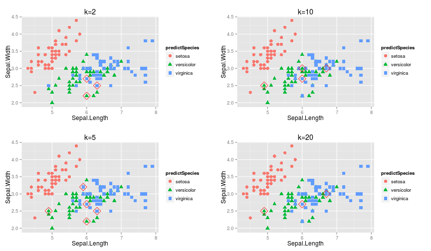

Problem
There is a classification algorithm named KNN(k-Nearest Neighbor algorithm), which use one's
neighbours to predict an unkown sample.
This algorithm is quite simple and useful, the only problem is use how many neighbours to predict?
yaleidu
There is a classification algorithm named KNN(k-Nearest Neighbor algorithm), which use one's
neighbours to predict an unkown sample.
This algorithm is quite simple and useful, the only problem is use how many neighbours to predict?
Derictly, we can use a bunch of parameters to build a model, and choose the best one.
The best means the one has smallest misclassification rate.
Here I use the famous data set iris in R, which has five variables.
head(iris)
Sepal.Length Sepal.Width Petal.Length Petal.Width Species
1 5.1 3.5 1.4 0.2 setosa
2 4.9 3.0 1.4 0.2 setosa
3 4.7 3.2 1.3 0.2 setosa
4 4.6 3.1 1.5 0.2 setosa
5 5.0 3.6 1.4 0.2 setosa
6 5.4 3.9 1.7 0.4 setosa
We will use the four predictors Sepal.Length, Sepal.Width, Petal.Length, Petal.Width to predict Species
